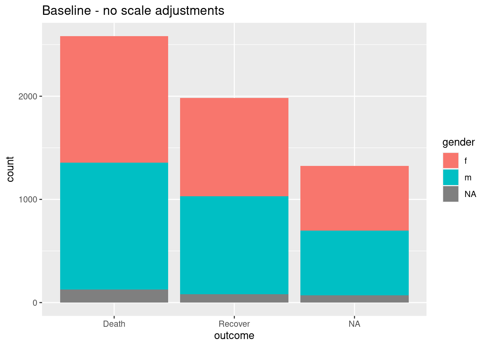
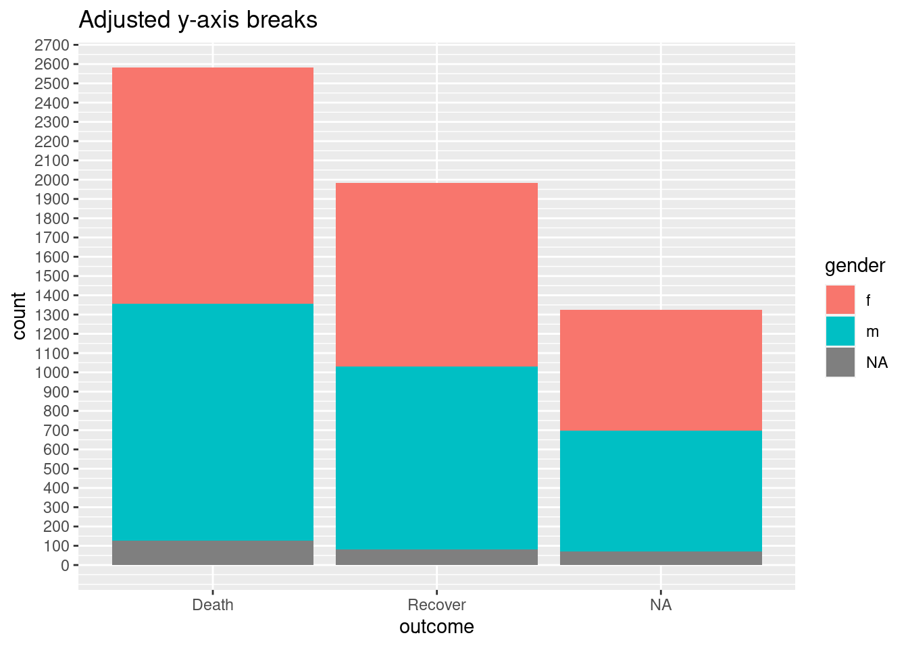
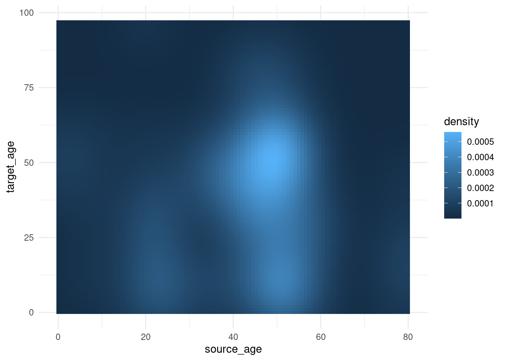
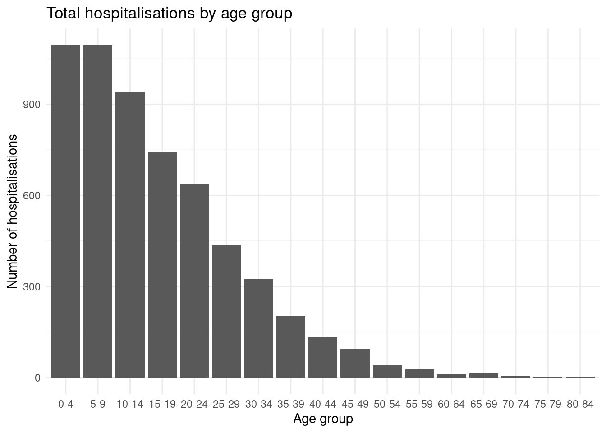

31 ggplotのヒント
このページでは、ggplotを使ってより美しい図を作るためのヒント・トリックを紹介します。より基礎的な使い方については、前章 ggplot の基礎の章を参照してください。
この章の終わりにあるリソースのページには、ggplot2に関するいくつかの詳細なチュートリアルを掲載しています。RStudio のウェブサイトからはこちらの ggplot によるデータ可視化のためのチートシートをダウンロードすることができます。また R グラフギャラリーと Data-to-viz は美しい図を作るインスピレーションを得るためにとてもおすすめのウェブサイトです。
31.1 準備
パッケージの読み込み
以下のコードにより必要なパッケージを読み込みます。このハンドブックでは pacman パッケージの p_load() を使うことで、パッケージのインストールと読み込みを同時に行っています。インストールされたパッケージの読み込みはRの基本パッケージ base に含まれる library() でも可能です。詳細はR の基礎の章を参照してください。
pacman::p_load(
tidyverse, # ggplot2およびその他の関数
rio, # 読み込み・書き出し
here, # ファイル位置指定
stringr, # 文字の操作
scales, # 数値の操作
ggrepel, # スマートなラベル作成
gghighlight, # 図の一部のハイライト
RColorBrewer # 色スケール
)データの読み込み
このページでは、エボラウイルスパンデミックのシミュレーションデータから、症例リストを読み込みます。チュートリアルに沿って操作したい場合は、こちらのリンクから整頓されたラインリスト（.rdsファイル）をダウンロードしてください。 rio パッケージの import() を使ってデータを読み込みます（この関数は.xlsx、.csv、.rdsなど多くのファイル形式を処理できます。詳細はインポートとエクスポートの章を参照してください）。
linelist <- rio::import("linelist_cleaned.rds")以下にラインリストの最初の 50 行を表示します。
31.2 color、fill、座標軸などのスケール
ggplot2 で描画する図のエステティック属性（size、color、shape、fill、座標軸など）をデータフレームの列に対応させるとき、それぞれの “scale” を操作することで、どのように図に反映するかを詳細に調整することができます。
31.2.1 配色
ggplot2 を使う上で最初に躓きやすいものが配色の調整です。この節では点や線、棒グラフやタイルなど、図のオブジェクト（geoms/shapes）の配色を扱うことに注意してください。テキストやタイトル、背景などの色の調整に関しては ggplot の基礎の章のテーマの節を参照してください。
図のオブジェクトの “色” を調整するとき、影響されるエステティクスパラメータは color =（外側の色）もしくは fill =（内側の色）です。geom_point() では例外的に color =のみを調整することで、点の色（内と外両方）を操作します。
色を指定するには、R が認識できる "red" のような色の名前（こちらのリストを参照するか、?colors コマンドで一覧が表示できます）か、"#ff0505" のような16進コードを用います。
# ヒストグラム
ggplot(data = linelist, mapping = aes(x = age))+ # データと軸を指定
geom_histogram( # ヒストグラムを表示
binwidth = 7, # ビンの幅
color = "red", # ビンの外側の色
fill = "lightblue") # ビンの内側の色
前章 ggplot の基礎のデータを図にマップするの章で示した通り、fill = や color = などのエステティック属性は mapping = aes() の外側と内側どちらからでも定義できます。aes() の外側で定義する場合、値は定数でなければならず（例 color = "blue"）、その geom で描画される全てのデータポイントに適応されます。内側から定義する場合、エステティック属性は color = hospital のようにデータフレームの列に対応され、描画のされ方は各行の値に依存します。以下にいくつかの例を示します：
# 点と線の色を単一色で指定する
ggplot(data = linelist, mapping = aes(x = age, y = wt_kg))+
geom_point(color = "purple")+
geom_vline(xintercept = 50, color = "orange")+
labs(title = "Static color for points and line")
# 連続数からなる列に色を対応させる
ggplot(data = linelist, mapping = aes(x = age, y = wt_kg))+
geom_point(mapping = aes(color = temp))+
labs(title = "Color mapped to continuous column")
# 離散数からなる列に色を対応させる
ggplot(data = linelist, mapping = aes(x = age, y = wt_kg))+
geom_point(mapping = aes(color = gender))+
labs(title = "Color mapped to discrete column")
# 棒グラフのfillを離散数からなる列、colorを単一色で指定する
ggplot(data = linelist, mapping = aes(x = hospital))+
geom_bar(mapping = aes(fill = gender), color = "yellow")+
labs(title = "Fill mapped to discrete column, static color")

スケール
列をエステティクスに対応させると（例 x =、y =、fill =、color =…）、 図にスケールとレジェンドが加わります。上記の例を見ると、スケールが連続数、離散数、日付など、スケールが対応する列のデータ型によって変化する様子が分かると思います。列に対応するエステティクスが複数あるときは、スケールもその数だけ存在します。
スケールは一連の scales_() 関数を使うことで操作することができます。これらの関数は scale_AESTHETIC_METHOD() のように、3 つの部分からなります：
- 最初の部分
scale_()は共通です。 - 2 つ目の部分 AESTHETIC はスケールを調整したいエステティック属性（
_fill_、_shape_、_color_、_size_、_alpha_…) が入ります - ここには_x_や_y_も含まれます。
- 最後に来る METHOD は列のデータ型または目的に応じて
_discrete()、continuous()、_date()、_gradient()、_manual()などが入ります。その他のオプションもありますが、ここに挙げたものが最もよく使われます。
スケールを操作する際は、適切な関数を使うことに気をつけてください。間違った関数を使うと、狙った結果が得られません。複数のスケールがある場合も、複数の対応する関数を用いてそれらを操作することができます
スケール引数
スケールを操作するための関数はそれぞれ独自の、しかし一部は共通した、引数を持ちます。?scale_color_discrete などのコマンドを R コンソールで実行することで、引数の解説を表示できます。
連続数のスケールでは、breaks = と seq()（以下の例のように to =、from =、and by =を引数に取ります）を組み合わせて操作します。さらに expand = c(0,0) を設定することで軸の両端の余白を削除できます。この引数は _x_ または _y_ を含むスケール関数のいずれでも使用できます。
離散数のスケールでは、レベルが表示される順序を breaks =、値の表示を labels =で操作できます。以下の例のように、各引数に文字ベクトルを指定してください。また、NA は na.translate = FALSE で簡単に除外することができます。
日付スケールについては流行曲線の章でより詳しく解説しています。
マニュアルでの調整
“マニュアル” スケール関数を用いることの利点の一つとして、望む色を具体的に指定することができます。これらの関数は scale_xxx_manual() の形（例：scale_colour_manual() や scale_fill_manual()）を取ります。例を通して下に挙げた引数の使用法をそれぞれ見ていきましょう。
-
values =により色を指定します。
-
na.value =によりNAの色を指定します。
-
labels =により凡例中の表記を指定します。
-
name =により凡例のタイトルを指定します。
以下の例では、まず棒グラフを初期設定で作成します。次に 3 つのスケール – 連続数の y 軸、離散値の x 軸、fill（バー内部の色指定）のマニュアル調整 – を変更したグラフを作成します。
# 初期設定 - スケール調整なし
ggplot(data = linelist)+
geom_bar(mapping = aes(x = outcome, fill = gender))+
labs(title = "Baseline - no scale adjustments")
# スケール調整あり
ggplot(data = linelist)+
geom_bar(mapping = aes(x = outcome, fill = gender), color = "black")+
theme_minimal()+ # 背景をシンプルにする
scale_y_continuous( # 連続数のy軸（カウント）
expand = c(0,0), # パディングなし
breaks = seq(from = 0,
to = 3000,
by = 500))+
scale_x_discrete( # 離散値のx軸（性別）
expand = c(0,0), # パディングなし
drop = FALSE, # 全ての因子型のレベルを表示（データに存在しないものを含む）
na.translate = FALSE, # NAを図から除外
labels = c("Died", "Recovered"))+ # 表記の変更
scale_fill_manual( # fillの色をマニュアル指定する（バー内部の色）
values = c("m" = "violetred", # 色の指定
"f" = "aquamarine"),
labels = c("m" = "Male", # レジェンドの表記を変更（"="を使い間違いをなくす）
"f" = "Female",
"Missing"),
name = "Gender", # レジェンドタイトル
na.value = "grey" # 欠測地の色を指定
)+
labs(title = "Adjustment of scales") # fillレジェンドのタイトルを設定連続数の座標軸スケール
データを座標軸に反映させる場合でも、スケール関数を用いて表示方法を操作することができます。よくある例として、y 軸などの座標軸を連続数からなる列に対応させる場合を紹介します。
scale_y_continuous() を用いて、座標軸のブレークや値の表示方法を変更することを考えます。前述のとおり、breaks = により入力する一連の数字によって座標軸上のブレークポイントが指定できます。ここで入力された数字が座標軸上に表示される数字に対応します。c() ベクターにより表示させたい数字を直接入力するか、base 関数 seq() を用いて表示される数字の開始（from =）と終わり（to =）、インターバル（by =）をそれぞれ入力することができます。
# 基本構文 – スケール操作なし
ggplot(data = linelist)+
geom_bar(mapping = aes(x = outcome, fill = gender))+
labs(title = "Baseline - no scale adjustments")
#
ggplot(data = linelist)+
geom_bar(mapping = aes(x = outcome, fill = gender))+
scale_y_continuous(
breaks = seq(
from = 0,
to = 3000,
by = 100)
)+
labs(title = "Adjusted y-axis breaks")
割合をパーセントで表示する
座標軸に対応させるデータの値が割合のとき、以下のようにスケール関数中に labels = scales::percent を加えることで、簡単にパーセント表示に変更することができます。
値の種類を文字に変更し “%” を付加することでもパーセント表示が得られますが、その場合データが連続数ではなくなるため好ましくありません。
# 元々の割合表示
#############################
linelist %>% # ラインリストから始める
group_by(hospital) %>% # 病院毎にグループ分け
summarise( # 要約列の作成
n = n(), # グループ毎の行数
deaths = sum(outcome == "Death", na.rm=T), # グループ毎の死亡数
prop_death = deaths/n) %>% # グループ毎の死亡割合
ggplot( # 図の作成
mapping = aes(
x = hospital,
y = prop_death))+
geom_col()+
theme_minimal()+
labs(title = "Display y-axis original proportions")
# パーセント表示
########################################
linelist %>%
group_by(hospital) %>%
summarise(
n = n(),
deaths = sum(outcome == "Death", na.rm=T),
prop_death = deaths/n) %>%
ggplot(
mapping = aes(
x = hospital,
y = prop_death))+
geom_col()+
theme_minimal()+
labs(title = "Display y-axis as percents (%)")+
scale_y_continuous(
labels = scales::percent # 割合をパーセント表示
)
Log スケール
Logスケールを用いるには、trans = "log2" をスケール関数に加えます。例として、各地域とその preparedness_index および累積症例数を列にもつデータフレームを考えます。
plot_data <- data.frame(
region = c("A", "B", "C", "D", "E", "F", "G", "H", "I"),
preparedness_index = c(8.8, 7.5, 3.4, 3.6, 2.1, 7.9, 7.0, 5.6, 1.0),
cases_cumulative = c(15, 45, 80, 20, 21, 7, 51, 30, 1442)
)
plot_data## region preparedness_index cases_cumulative
## 1 A 8.8 15
## 2 B 7.5 45
## 3 C 3.4 80
## 4 D 3.6 20
## 5 E 2.1 21
## 6 F 7.9 7
## 7 G 7.0 51
## 8 H 5.6 30
## 9 I 1.0 1442地域 “I” の症例数は他と比べて遥かに高くなっています。このような場合、y 軸を log スケールにすることで、症例数が少ない地域間の差異を見やすくすることができます。
# もともとのy軸スケール
preparedness_plot <- ggplot(data = plot_data,
mapping = aes(
x = preparedness_index,
y = cases_cumulative))+
geom_point(size = 2)+ # 地域毎のデータを表す散布図
geom_text(
mapping = aes(label = region),
vjust = 1.5)+ # テキストラベルの追加
theme_minimal()
preparedness_plot # 図を表示
# y軸をlogスケールで表示
preparedness_plot+ # 上記の図を修正する
scale_y_continuous(trans = "log2") # y軸のスケールを変更

勾配スケール
配色に勾配スケールを用いることで、表現の幅を広げることができます。初期設定でも美しい図が得られますが、値や切り捨て値などの詳細を調整したい場合もあります。
ここでは、コンタクトトレーシングの章で扱った各症例とその感染源の年齢を値に持つデータを用いて、連続数に対応するカラースケールの調整方法を紹介します。
case_source_relationships <- rio::import(here::here("data", "godata", "relationships_clean.rds")) %>%
select(source_age, target_age) 以下の例では、ラスターヒートマップを描画します。ヒートマップについての詳細はここでは扱わず（前段落のリンクを参照してください）、カラースケールの変更方法に焦点を当てます。ggplot2 の stat_density2d() 関数についてはこちらを参照してください。fill スケールが連続数であることに注意してください。
trans_matrix <- ggplot(
data = case_source_relationships,
mapping = aes(x = source_age, y = target_age))+
stat_density2d(
geom = "raster",
mapping = aes(fill = after_stat(density)),
contour = FALSE)+
theme_minimal()ここでいくつかのバリエーションを紹介します：
trans_matrix
trans_matrix + scale_fill_viridis_c(option = "plasma")

ブレークポイントを変更する例も見ていきましょう：
-
scale_fill_gradient()は2つの色（high/low）を入力に取ります -
scale_fill_gradient()はvalues =で長さの制限なく色のベクトルを入力に取ります。間の値は自動で補完されます。 -
scales::rescale()によって各色が勾配のどの位置に置かれるかを指定できます。この関数は数字ベクトルをとり、0 から 1 の間で色の位置をリスケールします。
trans_matrix +
scale_fill_gradient( # 2色スケール
low = "aquamarine", # 低い値の色
high = "purple", # 高い値の色
na.value = "grey", # NAの色
name = "Density")+ # レジェンドタイトル
labs(title = "Manually specify high/low colors")
# 3色以上の指定
trans_matrix +
scale_fill_gradientn( # 3色（low/mid/high）
colors = c("blue", "yellow","red") # ベクターで色を指定
)+
labs(title = "3-color scale")
# rescale()で色の配置を調整
trans_matrix +
scale_fill_gradientn( # 任意の数の色を指定
colors = c("blue", "yellow","red", "black"),
values = scales::rescale(c(0, 0.05, 0.07, 0.10, 0.15, 0.20, 0.3, 0.5)) # 色の位置を0から1の間で指定
)+
labs(title = "Colors not evenly positioned")
# limitsにより配色される下限・上限値を設定
trans_matrix +
scale_fill_gradientn(
colors = c("blue", "yellow","red"),
limits = c(0, 0.0002))+
labs(title = "Restrict value limits, resulting in grey space")


カラーパレット
Colorbrewer と Viridis
一般的に、もし既成のカラーパレットを使いたい場合は scale_xxx_brewer もしくは scale_xxx_viridis_y 関数を利用することができます。
‘brewer’ 関数は colorbrewer.org にあるパレットを使用します。
‘Viridis’ 関数は viridis（色覚障害の方でも見やすい！）パレットを使用します。Viridis は “色付きでも白黒でも同様に認識でき、かつ色覚障害があるひとにも識別しやすい色調になっています。”（詳細はこちらとこちらのリンクを参照してください。）カラーパレットが連続数、離散数、もしくはビニングスケールかによって、関数の末尾を変更します（例：離散数では scale_xxx_viridis_d）。
作成した図は色覚障害シミュレータで色覚障害があるひとへの見え方をテストするようにしましょう。赤と緑の配色は色覚障害がある場合は識別しづらいため、こちらで紹介されているように “熱冷”（赤・青）配色を代わりに用いましょう。
ここでは ggplot の基礎の章で扱った例を用いて、さまざまな配色を見ていきましょう。
symp_plot <- linelist %>% # ラインリストから始める
select(c(case_id, fever, chills, cough, aches, vomit)) %>% # 列を選択
pivot_longer( # データを伸長
cols = -case_id,
names_to = "symptom_name",
values_to = "symptom_is_present") %>%
mutate( # 欠測値を入れ替える
symptom_is_present = replace_na(symptom_is_present, "unknown")) %>%
ggplot( # ggplotの入力開始！
mapping = aes(x = symptom_name, fill = symptom_is_present))+
geom_bar(position = "fill", col = "black") +
theme_classic() +
theme(legend.position = "bottom")+
labs(
x = "Symptom",
y = "Symptom status (proportion)"
)
symp_plot # 初期設定による配色で表示
#################################
# print with manually-specified colors
symp_plot +
scale_fill_manual(
values = c("yes" = "black", # 個別に色を指定する
"no" = "white",
"unknown" = "grey"),
breaks = c("yes", "no", "unknown"), # 因子型の並び替え
name = "" # タイトルなし
)
#################################
# viridisによる離散スケールの配色
symp_plot +
scale_fill_viridis_d(
breaks = c("yes", "no", "unknown"),
name = ""
)31.3 離散値の順序変更
ggplot2 に慣れないうちは、図に現れる離散値の順序変更はしばしば難しく感じられるでしょう。しかし、一度仕組みを理解すれば簡単です。一般的に離散値は factor として扱われ、アルファベット順に並べられます。これを並べ替えるには、因子型のレベルを表示したい順序に変更するだけです。factor の並べ替えについてのさらなる詳細は 因子（ファクタ）型の章を参照してください。
例として年齢グループの並べ替えを見てみましょう。初期設定ではアルファベット順に従い、5-9 歳のグループは図の中央に配置されています。因子型のレベルを変更することで、これを 0-4 歳の後に移動することができます。
ggplot(
data = linelist %>% drop_na(age_cat5), # age_cat5を欠測した行の削除
mapping = aes(x = fct_relevel(age_cat5, "5-9", after = 1))) + # 因子型のレベルの変更
geom_bar() +
labs(x = "Age group", y = "Number of hospitalisations",
title = "Total hospitalisations by age group") +
theme_minimal()31.3.0.1 ggthemr
ggthemr パッケージも有用なパッケージの１つです。こちらの Github からチュートリアルに従ってダウンロードできます。このパッケージはとても美しいカラーパレットを使用できますが、扱える色の数に上限があるため、7-8 色以上の図を作成する際には注意が必要です。
31.4 等高線プロット
等高線プロットは、散布図だとデータポイントが多く重なり合ってしまうような場合（“オーバープロッティング” といいます）に有用です。先程の症例-感染源の年齢データを、ここでは stat_density2d() と stat_density2d_filled() を用いて地形図のように等高線プロットで描画します。統計学的な詳細についてはこちらを参照してください。
case_source_relationships %>%
ggplot(aes(x = source_age, y = target_age))+
stat_density2d()+
geom_point()+
theme_minimal()+
labs(title = "stat_density2d() + geom_point()")
case_source_relationships %>%
ggplot(aes(x = source_age, y = target_age))+
stat_density2d_filled()+
theme_minimal()+
labs(title = "stat_density2d_filled()")
31.5 周辺分布
geom_point() による散布図の外側にデータ分布を示すには、ggExtra パッケージの ggMarginal() が有用です。オブジェクトとして保存したプロットデータを、以下のように ggMarginal() に入力します。いくつかの重要な引数を示します：
-
type =を用いてプロットのタイプを “histogram”、“density”、“boxplot”、“violin”、“densigram” のいずれかに指定する必要があります。 - 初期設定では、x 軸と y 軸両方に分布図が表示されます。どちらか一方のみにしたい場合は、
margins =を “x” または “y” に設定します。 - 他に設定できる引数として
fill =（バーの内側の色）color =（線の色）、size =（メインの図とマージン部分の比率。数字が大きいほどマージン部分は小さくなります）があります。 -
xparams =とyparams =を用いて、座標軸を指定してその他のパラメータを設定できます。以下の例では、軸ごとに異なるビンの幅を指定しています。
周辺分布にデータ内のグループ（ggplot() 内のエステティクスで color =に指定されている列）を反映させることもできます。その場合は以下のように、ggMarginal() 内の groupColour =もしくは groupFill =を TRUE に設定します。
より詳しい解説はこちらのビネット、R グラフギャラリーもしくは ?ggMarginal を R コンソールに入力して表示できるページを参照してください。
# ggExtraのインストールと読み込み
pacman::p_load(ggExtra)
# 体重と年齢を基本の散布図で図示する
scatter_plot <- ggplot(data = linelist)+
geom_point(mapping = aes(y = wt_kg, x = age)) +
labs(title = "Scatter plot of weight and age")ヒストグラムを周辺図として追加する場合は type = "histogram" を指定します。さらに groupFill = TRUE と設定することで多重ヒストグラムを描画できます。
# ヒストグラム
ggMarginal(
scatter_plot, # 周辺分布図を追加
type = "histogram", # ヒストグラムを指定
fill = "lightblue", # バー内の色を指定
xparams = list(binwidth = 10), # x軸側の分布図のパラメータ
yparams = list(binwidth = 5)) # y軸側の分布図のパラメータ
グループ毎に色分けされた周辺分布図：
# 性別毎に色分けされた散布図
# ggplotのcolorを性別の列に対応させる。ggMarginalのgroupFillをTRUEに設定する。
scatter_plot_color <- ggplot(data = linelist %>% drop_na(gender))+
geom_point(mapping = aes(y = wt_kg, x = age, color = gender)) +
labs(title = "Scatter plot of weight and age")+
theme(legend.position = "bottom")
ggMarginal(scatter_plot_color, type = "density", groupFill = TRUE)size =によって周辺分布図のサイズを指定します。数字が小さいほど大きな周辺分布図が得られます。また color =も設定できます。以下の例は周辺分布ボックスプロットで、margins =により片方の軸にのみ表示させています：
# ボックスプロット
ggMarginal(
scatter_plot,
margins = "x", # x軸側にのみ周辺分布図を表示
type = "boxplot") 31.6 スマートラベリング
ggplot2 では図中にテキストを表示することもできます。しかし、テキストと図中のデータポイントが重なり読みづらくなってしまうということがしばしば起こります。R の base 関数ではこの問題を解決することは難しいですが、ggrepel という追加パッケージを使うことでうまく処理することができます！
ggrepel パッケージは geom_label() と geom_text() それぞれの代わりとなる新しい関数geom_label_repel() と geom_text_repel() を提供してくれます。これらの関数を基本関数の代わりに使うだけで、整ったラベルを作ることができます。これらの関数内では aes() を通常通り設定しますが、その中で label =によりラベルに使いたい列（例：患者 ID や名前など）を指定します。また str_glue() を使えば、以下の例のように複数の列を改行（\n）で繋いでより複雑なラベルを作ることも可能です。
いくつかのヒントを示します：
-
min.segment.length = 0と設定すると常にデータポイントとラベルを繋ぐ線が描画され、逆にmin.segment.length = Infと設定すれば常に線は描画されません。 -
size =をaes()の外側で設定することで文字サイズを指定できます。 -
force =によりラベルとデータポイント間をどの程度離すかを設定できます（初期設定は 1 ）。 -
fill =をaes()内で設定することでラベルの色を指定できます。- その場合、レジェンドには文字 “a” が表示されますが、これは
guides(fill = guide_legend(override.aes = aes(color = NA)))により除くことができます。
- その場合、レジェンドには文字 “a” が表示されますが、これは
より詳細なチュートリアルはこちらを参照してください。
pacman::p_load(ggrepel)
linelist %>% # ラインリスト
group_by(hospital) %>% # 病院でグループ分け
summarise( # 病院毎にまとめた新しいデータフレームを作る
n_cases = n(), # 病院毎の症例数
delay_mean = round(mean(days_onset_hosp, na.rm=T),1), # 病院毎の発症までの平均日数
) %>%
ggplot(mapping = aes(x = n_cases, y = delay_mean))+ # ggplotにデータを入力
geom_point(size = 2)+ # 散布図
geom_label_repel( # ラベルの追加
mapping = aes(
label = stringr::str_glue(
"{hospital}\n{n_cases} cases, {delay_mean} days") # ラベルの表示を指定
),
size = 3, # ラベルの文字サイズ
min.segment.length = 0)+ # 全てのデータポイントとラベル間に線を表示
labs( # 図と座標軸のタイトル
title = "Mean delay to admission, by hospital",
x = "Number of cases",
y = "Mean delay (days)")一部のデータポイントのみをラベルすることもできます - 通常の ggplot() 構文内の data =により、それぞれの geom レイヤーに異なるデータセットを指定します。以下の例では全てのデータポイントを描画しつつ、一部のデータポイントのみをラベルします。
ggplot()+
# 全ての点を灰色にする
geom_point(
data = linelist, # 全てのデータポイントを描画
mapping = aes(x = ht_cm, y = wt_kg),
color = "grey",
alpha = 0.5)+ # 灰色・半透明の点
# 一部の点を黒くする
geom_point(
data = linelist %>% filter(days_onset_hosp > 15), # フィルターしたデータを指定
mapping = aes(x = ht_cm, y = wt_kg),
alpha = 1)+ # 初期設定通り黒・透明化なしの点
# 一部の点にラベルを付加する
geom_label_repel(
data = linelist %>% filter(days_onset_hosp > 15), # フィルターしたデータのみをラベルする
mapping = aes(
x = ht_cm,
y = wt_kg,
fill = outcome, # 臨床結果ごとに色分け
label = stringr::str_glue("Delay: {days_onset_hosp}d")), # str_glue()によりラベルを作成
min.segment.length = 0) + # 全てのデータポイントとラベル間に線を表示
# レジェンド内の文字"a"を削除
guides(fill = guide_legend(override.aes = aes(color = NA)))+
# 座標軸のラベル
labs(
title = "Cases with long delay to admission",
y = "weight (kg)",
x = "height(cm)")31.7 時間スケール
ggplot で時間スケールを使用すると聞くと難しく感じるかもしれませんが、いくつかのキーになる関数を用いることでとても簡単に行うことができます。時間や日付を扱う際は、変数が正しくフォーマットされていることを確認してください。詳細は日付の扱いの章または前章 ggplotの基礎内流行曲線の章を参照してください。
ggplot2 で日付を扱う際に最も有用な関数はスケール関数（scale_x_date()、scale_x_datetime()、そしてそれらに対応する y 軸用の関数）です。これらの関数を用いることで、軸ラベルの個数やフォーマットを変更することができます。日付のフォーマットについては、working with dates をまた参照してください！date_breaks や date_labels といった引数により日付の表示方法を変更することができます：
date_breaksにより軸スケールの区切り間隔を変更できます。入力は文字列を用います（例："3 months"や"2 days"など）。date_labelsにより日付の表示方法を変更できます。ここでも文字列でフォーマットを指定します（例：“%b-%d-%Y”）。
# 観測された発症日から流行曲線を作成する
ggplot(linelist, aes(x = date_onset)) +
geom_histogram(binwidth = 7) +
scale_x_date(
# 1ヶ月ごとに軸ラベルを表示する
date_breaks = "1 months",
# 月・日をラベルとして表示する
date_labels = "%b %d"
) +
theme_classic()31.8 特定の要素を強調する
図中の特定の要素を強調することで、全てのデータポイントを表示しつつ、任意の変数や事象について注意を引くことができます。これについて ggplot2 の基本関数はあまり得意ではありませんが、追加パッケージ gghighlight により簡単に行うことができます。このパッケージは ggplot の基本構文と容易に組み合わせることができます。
gghighlight パッケージの gghighlight() を用います。入力には論理文を用います – これにより様々な要素を強調した図を作成することができますが、ここではラインリストから年齢の分布を、臨床結果を強調しながら図示してみましょう。
# gghighlightを読み込む
library(gghighlight)
# outcome列内のNA値を"Unknown"で入れ替える
linelist <- linelist %>%
mutate(outcome = replace_na(outcome, "Unknown"))
# 全症例の年齢分布をヒストグラムで図示
ggplot(
data = linelist,
mapping = aes(x = age_years, fill = outcome)) +
geom_histogram() +
gghighlight::gghighlight(outcome == "Death") # 患者が亡くなっている症例の分布を強調する
これはファセットプロットとの相性も良いです – ファセットに用いた変数を図ごとに強調することができます！以下では週ごとの症例数を用いて流行曲線を作成し、病院ごとに分けて描画します（color =と facet_wrap() に hospital を設定）。
# 週ごとの症例数をヒストグラムで表示
linelist %>%
count(week = lubridate::floor_date(date_hospitalisation, "week"),
hospital) %>%
ggplot()+
geom_line(aes(x = week, y = n, color = hospital))+
theme_minimal()+
gghighlight::gghighlight() + # ファセット図毎に該当病院を強調
facet_wrap(~hospital) # 病院毎にファセットする31.9 複数のデータセットをプロットする
複数のデータセットの座標軸を正確に揃えることは簡単ではありません。以下の 2 つのアプローチのどちらかを取りましょう：
- 図を作成する前にデータを統合し、元のデータセットを区別するための列を追加する。
- cowplot などのパッケージを用いて複数の図を組み合わせる（以下参照）。
31.10 図の組み合わせ
複数の図を組み合わせるのに非常に便利な 2 つのパッケージが cowplot と patchwork です。 このページでは主に cowplot に焦点を当てつつ、patchwork についても一部で使用例を紹介します。
cowplot のイントロダクションはこちらで見ることができます。含まれる各関数の詳細についてはこちらを参照してください。ここでは一部の最もよく用いられるものについて使用例を見ていきます。
cowplot パッケージは ggplot2 と並行して使われます - cowplot を使うことで、ggplot2 で作成した複数の図と凡例を 1 つにまとめて表示することができます。入力にRの base 関数で作成した図を用いることも可能です。
pacman::p_load(
tidyverse, # データの整理と図示
cowplot, # 図の組み合わせ
patchwork # 図の組み合わせ
)図のファセット（ggplot の基礎の章を参照）は便利な手法ではあるものの、表示方法に限りがあるため、望んだ図が得られないことがままあります。代わりに、複数の図を組み合わせて 1 つの図にしてしまうことも可能です。そのためのパッケージとして cowplot、gridExtra、patchwork の3つがあり、どれも大まかに同様の結果を得ることができます。ここでは cowplot に焦点を当て、使い方を見ていきましょう。
plot_grid()
cowplot パッケージには多くの関数がありますが、そのうち最も使いやすいものが plot_grid() です。この関数は、複数の図をグリッドにそって並べることができます。ここではマラリアデータセットを使って、地区毎の症例数、および時間毎の流行曲線を並べて図示する例を見ていきます。
malaria_data <- rio::import(here::here("data", "malaria_facility_count_data.rds"))
# 地区毎の症例数を棒グラフで図示
p1 <- ggplot(malaria_data, aes(x = District, y = malaria_tot)) +
geom_bar(stat = "identity") +
labs(
x = "District",
y = "Total number of cases",
title = "Total malaria cases by district"
) +
theme_minimal()
# 時間毎の流行曲線
p2 <- ggplot(malaria_data, aes(x = data_date, y = malaria_tot)) +
geom_col(width = 1) +
labs(
x = "Date of data submission",
y = "number of cases"
) +
theme_minimal()
cowplot::plot_grid(p1, p2,
# 2行1列で2つの図を並べる
ncol = 1,
nrow = 2,
# 上下の図の高さの比を2:3に設定
rel_heights = c(2, 3))凡例を組み合わせる
もし複数の図が同じ凡例を持つ場合、それらを統合することは比較的単純です。上記の例と同様 cowplot により図を組み合わせ、そのうちの 1 つを残してレジェンドを取り除きます。
複数の図が異なるレジェンドを持つ場合は、以下のアプローチを取ります：
-
theme(legend.position = "none")を用いてレジェンドを持たない図を作成する。 - 以下の例のように
get_legend()を用いて各図 – レジェンドを表示するよう変更したもの - からレジェンドを抜き出す。 - 抽出したレジェンドをレジェンドパネルにまとめる。
- 図とレジェンドパネルを組み合わせる。
先ずは、2 つの図をレジェンドを統合せずに組み合わせます（美しくなく非効率なスペースの使い方）：
p1 <- linelist %>%
mutate(hospital = recode(hospital, "St. Mark's Maternity Hospital (SMMH)" = "St. Marks")) %>%
count(hospital, outcome) %>%
ggplot()+
geom_col(mapping = aes(x = hospital, y = n, fill = outcome))+
scale_fill_brewer(type = "qual", palette = 4, na.value = "grey")+
coord_flip()+
theme_minimal()+
labs(title = "Cases by outcome")
p2 <- linelist %>%
mutate(hospital = recode(hospital, "St. Mark's Maternity Hospital (SMMH)" = "St. Marks")) %>%
count(hospital, age_cat) %>%
ggplot()+
geom_col(mapping = aes(x = hospital, y = n, fill = age_cat))+
scale_fill_brewer(type = "qual", palette = 1, na.value = "grey")+
coord_flip()+
theme_minimal()+
theme(axis.text.y = element_blank())+
labs(title = "Cases by age")plot_grid() でレジェンドはそのままに図を組み合わせます：
次に、凡例を統合した場合を見てみましょう。初めに凡例なしの図を作成し（theme(legend.position = "none"）、cowplot パッケージの get_legend() により凡例を別に抽出します。凡例を抜き出す際には、+ シンボルを用いて、配置（“right”）やタイトルも指定しながら凡例を戻し入れる必要があります。最後に2つの凡例を上下に結合し、先に作成した図と組み合わせて完成です！
# レジェンドなし図1を作成
p1 <- linelist %>%
mutate(hospital = recode(hospital, "St. Mark's Maternity Hospital (SMMH)" = "St. Marks")) %>%
count(hospital, outcome) %>%
ggplot()+
geom_col(mapping = aes(x = hospital, y = n, fill = outcome))+
scale_fill_brewer(type = "qual", palette = 4, na.value = "grey")+
coord_flip()+
theme_minimal()+
theme(legend.position = "none")+
labs(title = "Cases by outcome")
# レジェンドなし図2を作成
p2 <- linelist %>%
mutate(hospital = recode(hospital, "St. Mark's Maternity Hospital (SMMH)" = "St. Marks")) %>%
count(hospital, age_cat) %>%
ggplot()+
geom_col(mapping = aes(x = hospital, y = n, fill = age_cat))+
scale_fill_brewer(type = "qual", palette = 1, na.value = "grey")+
coord_flip()+
theme_minimal()+
theme(
legend.position = "none",
axis.text.y = element_blank(),
axis.title.y = element_blank()
)+
labs(title = "Cases by age")
# p1（p1 + レジェンド）からレジェンドを抜き出す
leg_p1 <- cowplot::get_legend(p1 +
theme(legend.position = "right", # レジェンドの抜き出し
legend.justification = c(0,0.5))+ # レジェンドの配列
labs(fill = "Outcome")) # レジェンドタイトル
# p2（p2 + レジェンド）からレジェンドを抜き出す
leg_p2 <- cowplot::get_legend(p2 +
theme(legend.position = "right", # レジェンドの抜き出し
legend.justification = c(0,0.5))+ # レジェンドの配列
labs(fill = "Age Category")) # レジェンドタイトル
# レジェンド配置用の空白図を作成
#blank_p <- patchwork::plot_spacer() + theme_void()
# レジェンドパネルを作成。2つのレジェンドを上下に組み合わせる（もしくは上記コメント中のplot_spacer()を用いる）
legends <- cowplot::plot_grid(leg_p1, leg_p2, nrow = 2, rel_heights = c(.3, .7))
# 2つの図とレジェンドパネルを組み合わせる
combined <- cowplot::plot_grid(p1, p2, legends, ncol = 3, rel_widths = c(.4, .4, .2))
combined # 図を表示
上記のアプローチはこちらのポストを参照し、 レジェンド配置のための小さな修正をこちらを参考に加えています。
コラム：cowplot の “cow” は cowplot パッケージ製作者の名前 - Claus O. Wilke - から来ています。
図の中に図を挿入する
cowplot では図の内部にさらに違う図を表示することもできます。使用に際していくつかの注意点があります：
-
cowplot パッケージの
theme_half_open()でメインの図を指定します；凡例は図の上部もしくは下部に配置すると良いでしょう。 - 埋め込む図を作成します。凡例の必要のない図を用いることが好ましいです。さらに以下のように、
element_blank()を用いてプロットのtheme要素を削除することができます。 -
ggdraw()によりメインの図と組み合わせます。さらにdraw_plot()により内部プロットの座標（埋め込む図の左下隅の位置 x と y）、高さと幅をメイン図との比で指定します。
# メイン図の作成
main_plot <- ggplot(data = linelist)+
geom_histogram(aes(x = date_onset, fill = hospital))+
scale_fill_brewer(type = "qual", palette = 1, na.value = "grey")+
theme_half_open()+
theme(legend.position = "bottom")+
labs(title = "Epidemic curve and outcomes by hospital")
# 埋め込み図の作成
inset_plot <- linelist %>%
mutate(hospital = recode(hospital, "St. Mark's Maternity Hospital (SMMH)" = "St. Marks")) %>%
count(hospital, outcome) %>%
ggplot()+
geom_col(mapping = aes(x = hospital, y = n, fill = outcome))+
scale_fill_brewer(type = "qual", palette = 4, na.value = "grey")+
coord_flip()+
theme_minimal()+
theme(legend.position = "none",
axis.title.y = element_blank())+
labs(title = "Cases by outcome")
# 2つの図を組み合わせる
cowplot::ggdraw(main_plot)+
draw_plot(inset_plot,
x = .6, y = .55, #x = .07, y = .65,
width = .4, height = .4)より深く知りたい場合は、以下のビニエット（vignette）を参照してください：
31.11 二重座標軸
ggplot2 を使用していて、1 つの図に 2 つ目の y 軸を表示したい場合があります。データの可視化において、そのような二重 y 軸の正当性は議論の的であり、またしばしば推奨されないものではありますが、あなたの上司がそれを求めてくるかもしれません。ここでは、それを実現する 1 つの方法を紹介します：cowplot を用いて、異なる y 軸を持つ 2 つの図を組み合わせましょう。
この方法では、2 つの独立した図を作成します – y 軸を 1 つは左側に、もう 1 つは右側に持つようにします。どちらも theme_cowplot() を使用して作成し、x 軸は同一でなくてはなりません。次に、作成した 2 つの図を重ね合わせます。これらは cowplot の持つ機能の内のほんの 1 つですが、こちらのページでさらに詳しく解説されています。
以下では例として、流行曲線を週毎の死亡患者数のパーセンテージを示す折れ線グラフと重ね合わせます。この例のように日付を x 軸に持つ図を重ね合わせるのは、例えば棒グラフを他の図と重ね合わせる場合などに比べてより複雑です。いくつか注意点を挙げます：
- 流行曲線と折れ線グラフは、描画前に週毎の値に変換し、さらに
date_breaksとdate_labelsが同じ値を取るようにします - これは 2 つの図が完全に同じ x 軸を持つようにするためです。 - 片方の図の y 軸は
scale_y_continuous()のposition =によって右側に移動します。 - どちらの図も
theme_cowplot()を使用します。
ちなみに Epidemic curves の章でも別の例 - 累積症例数と流行曲線を組み合わせ - を示しています。
図 1 の作成
流行曲線を作成します。ここでは geom_area() をその紹介も兼ねて使用します（曲線下面積の図示）。
pacman::p_load(cowplot) # cowplotの読み込み
p1 <- linelist %>% # 図をオブジェクトとして保存
count(
epiweek = lubridate::floor_date(date_onset, "week")) %>%
ggplot()+
geom_area(aes(x = epiweek, y = n), fill = "grey")+
scale_x_date(
date_breaks = "month",
date_labels = "%b")+
theme_cowplot()+
labs(
y = "Weekly cases"
)
p1 # 図の表示図 2 の作成
週毎の死亡患者のパーセンテージを示す折れ線グラフを作成します。
p2 <- linelist %>% # 図をオブジェクトとして保存
group_by(
epiweek = lubridate::floor_date(date_onset, "week")) %>%
summarise(
n = n(),
pct_death = 100*sum(outcome == "Death", na.rm=T) / n) %>%
ggplot(aes(x = epiweek, y = pct_death))+
geom_line()+
scale_x_date(
date_breaks = "month",
date_labels = "%b")+
scale_y_continuous(
position = "right")+
theme_cowplot()+
labs(
x = "Epiweek of symptom onset",
y = "Weekly percent of deaths",
title = "Weekly case incidence and percent deaths"
)
p2 # 図の表示align_plots() によって2つの図の縦横（“hv”、または “h”、“v”、“none” のいずれか）を重ね合わせます。全ての軸（上下左右）についても同様に “tblr” で指定します。出力はリスト（要素 2 つ）になります。
最後に ggdraw()（cowplot パッケージ）を用いて、aligned_plots 内の各図を指定することで 2 つの図を重ねて表示します。
aligned_plots <- cowplot::align_plots(p1, p2, align="hv", axis="tblr") # 2 つの図の配置を合わせリストオブジェクトとして保存
aligned_plotted <- ggdraw(aligned_plots[[1]]) + draw_plot(aligned_plots[[2]]) # 重ね合わせた図を保存
aligned_plotted # 図の表示31.12 役に立つパッケージ
ggplot2 を使いこなすうえで、いくつかの R パッケージが非常に便利です：
ggplot2 を GUI 上で操作する：equisse
“このアドインは ggplot2 を使用したインタラクティブなデータ解析を可能にします。棒グラフ、曲線、散布図、ヒストグラム、ボックスプロットや sf オブジェクトなどを作成し、できた図を書き出したり、それらを作成するためのコードを抽出することができます。”
インストールおよびアドインの立ち上げは RStudio のメニューまたは esquisse::esquisser() コマンドから行うことができます。
こちらの Github ページと
使用手引きを参照してください。
31.13 その他
数の表記
図を作成する前に以下のコマンドを使用することで、数の科学的表記をオフにすることができます：
options(scipen=999)または以下のように、scales パッケージの number_format() を特定の値または列に対して使用します。
scales パッケージに含まれる関数を用いることで、数の表記方を簡単に変更することができます。これらはデータフレームの列に対しても使用できますが、ここでは例を示すため個別の数値に対して使用しています。
scales::number(6.2e5)## [1] "620 000"
scales::number(1506800.62, accuracy = 0.1,)## [1] "1 506 800.6"
scales::comma(1506800.62, accuracy = 0.01)## [1] "1,506,800.62"
scales::comma(1506800.62, accuracy = 0.01, big.mark = "." , decimal.mark = ",")## [1] "1.506.800,62"
scales::percent(0.1)## [1] "10%"
scales::dollar(56)## [1] "$56"
scales::scientific(100000)## [1] "1e+05"31.14 参考文献
インスピレーション ggplot グラフギャラリー
データの表示 欧州疾病予防管理センター 調査データの表示方法についてのガイドライン
ファセットとラベル ラベラーを使ったファセット図のラベル変更 ラベラー
ファクターの並べ替え
fct_reorder
fct_inorder
ボックスプロットの並べ替え
ggplot2 の変数の並べ替え
データサイエンスのための R - 因子型
レジェンド
レジェンドの並べ替え
キャプション キャプションの整列
ラベル
ggrepel
チートシート ggplot2 による美しい図の作り方